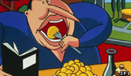

Stuffed
| Li: | Neil, can we get this programme done now? I need to get some stuff for my Sunday roast dinner. |
| Neil: | I am stuffed! Oh, totally stuffed (burp)m sorry! |
| Li: | Well, since today's words are stuff and stuffed, I think you will be just perfect to explain them. |
| Neil: | Oh that's easy. I knew I was going to a launch party this lunchtime, so I skipped breakfast. |
| Li: | That's not good. |
| Neil: | Anyway, I got there and a lovely buffet was set up. The stuff on offer looked great. |
| Li: | Stuff? You mean the food? |
| Neil: | Yes. The word 'stuff' can mean anything really. It almost has the same meaning as 'things'. Let's hear these people: |
We need to clear the lockers. Can you get all your stuff out by 7pm tonight.
The amount of stuff she's got in her bathroom is unbelievable. She's got enough to open a beauty shop.
Woman: What's that stuff on your jacket?
Man: Er, it's pigeon dropping. Yuck.
| Li: | Well, we hear the word stuff used a lot in conversations. People say it all the time. My stuff, your stuff, his stuff. All referring to things. |
| Neil: | Yes. You can also use it like a verb: I stuffed myself with food. |
| Li: | You are stuffed? Completely full? |
| Neil: | Yes, I am completely stuffed, I can barely move. |
| Li: | What about stuffed toys? I see them a lot in toyshops. You look just like one of those stuffed toys! |
| Neil: | I can't stand them. They are stuffed full of wool or cotton or something. They are for girls; I much prefer proper wooden toys. |
| Li: | Maybe you'd prefer a wooden pillow too? |
| Neil: | Are you joking! I've got to have a nice and soft pillow. But I must make sure it has the right stuffing in it? |
| Li: | What's the right stuffing? |
| Neil: | Anything but feather or duck down. |
| Li: | Why? |
| Neil: | Allergies. I can't stand anything stuffed with feathers. |
| Li: | I think we've talked long enough about stuff you eat for lunch, stuff that you liked and stuff that gives you allergies. |
| Neil: | Well, it's time for you to get your stuff ready for Sunday Roast. |
| Li: | That's right. Join us next time. Bye bye! |
| Neil: | Bye! |